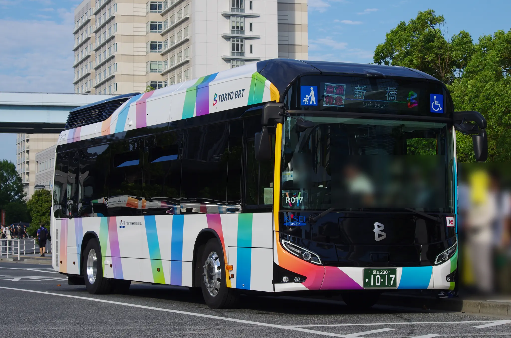

Tweet 東京BRT 東京都心と臨海副都心を結ぶBRT路線の運行を目的として設立された。2020年よりプレ運行が開始されている。 R005【B01】有明テニスの森-豊洲市場前燃料電池バス「SORA」が主力車両となっている。 1004(現R004)【B01】勝どきBRT-新橋 R005【B01】有明テニスの森-豊洲市場前 R007【B01】有明テニスの森-豊洲市場前 R006【B01】豊洲市場前-勝どきBRT 1009【B01】豊洲市場前-勝どきBRT 1010(現R010)【B05】新橋-勝どきBRT 直通特急 コミケ開催時に運行され、国際展示場と新橋をノンストップで結ぶ。 R017 直通特急 有明テニスの森-豊洲市場前  R017 直通特急 国際展示場 R015 直通特急 豊洲市場前-勝どきBRT R015 直通特急 豊洲市場前-勝どきBRT R176 直通特急 豊洲市場前-勝どきBRT R077 直通特急 国際展示場 1008(現R008) 直通特急 有明テニスの森-豊洲市場前 1008(現R008) 直通特急 有明テニスの森-豊洲市場前 R902 直通特急 豊洲市場前-勝どきBRT R902 直通特急 国際展示場 R902 直通特急 有明テニスの森-豊洲市場前 Tweet